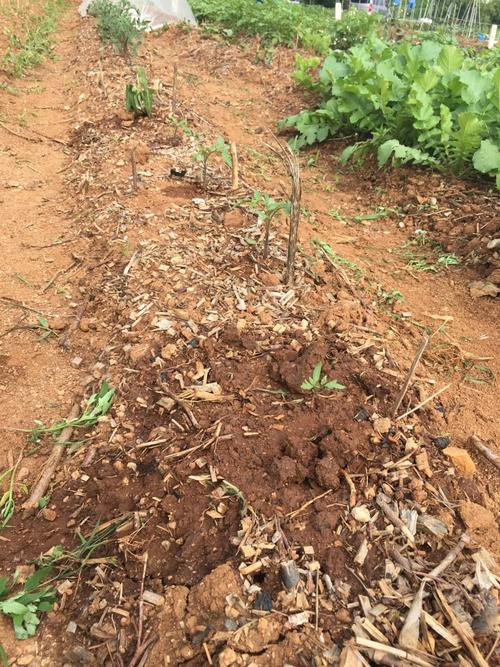
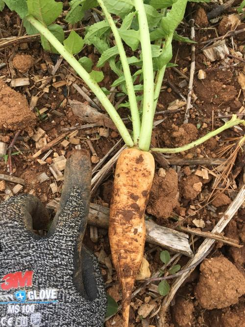
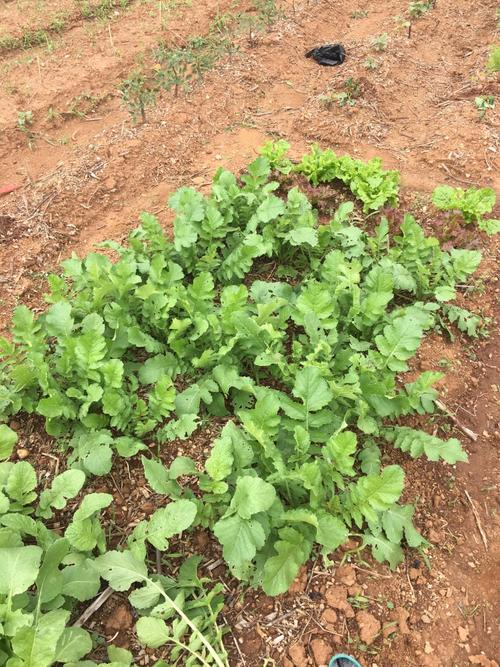
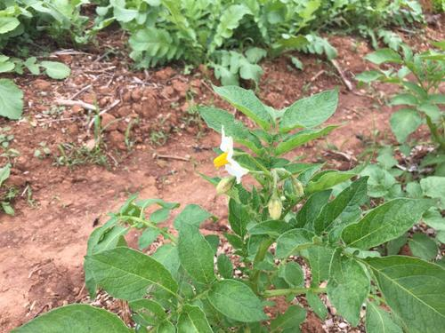
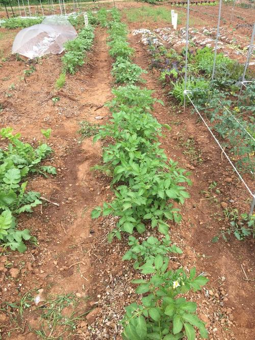
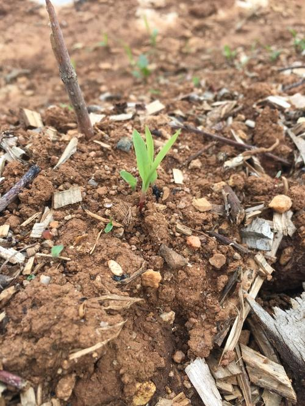
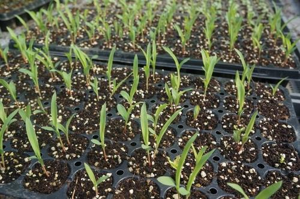
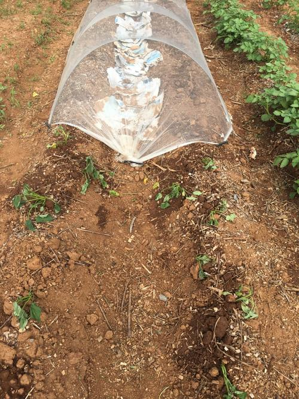

About this Article
Date Released:
Sunday, May 20 2018 8:37 PM2018-05-20 수수 싹출현, 감자 개화
한 일
- 고구마 줄기 심기
- 토마토, 가지, 들깨, 수수 웃거름 (쌀뜨물, 소변)
- 파종한 토마토 1개 옮겨 심음
- 김매기, 물주기
다음 할 일
- 토마토, 가지 지지대 세우기
- 열무, 알타리 수확

<토마토>



<알타리, 열무, 상추>
알타리 크기(약 10cm)를 알아보려고 하나 뽑았다 다시 심음


<감자>


<수수>

<고구마>